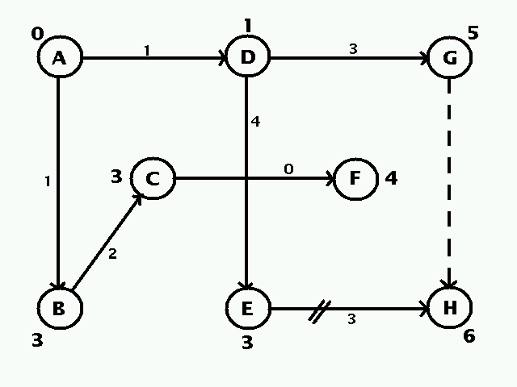
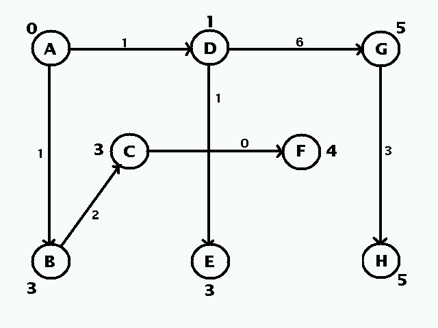
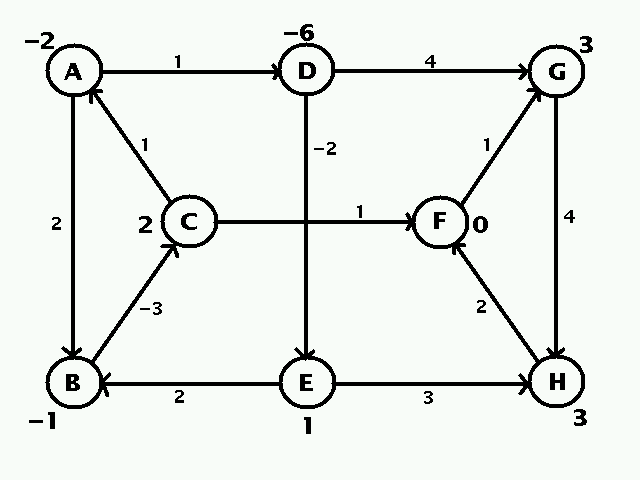
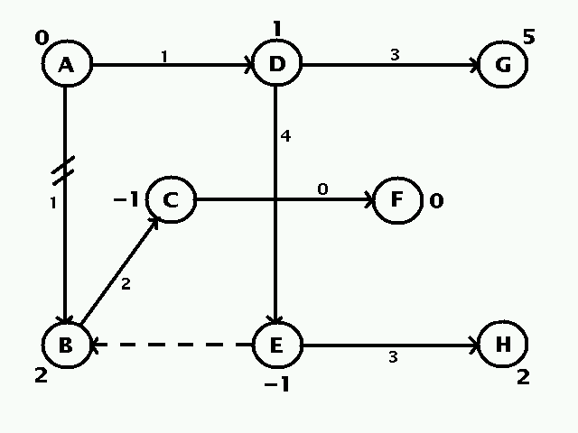
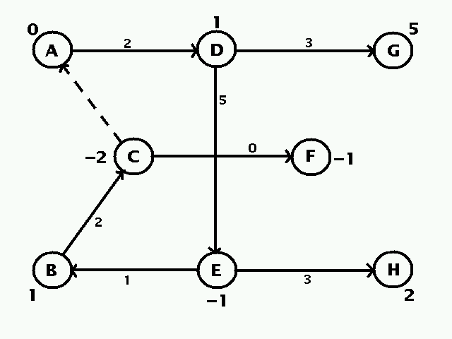
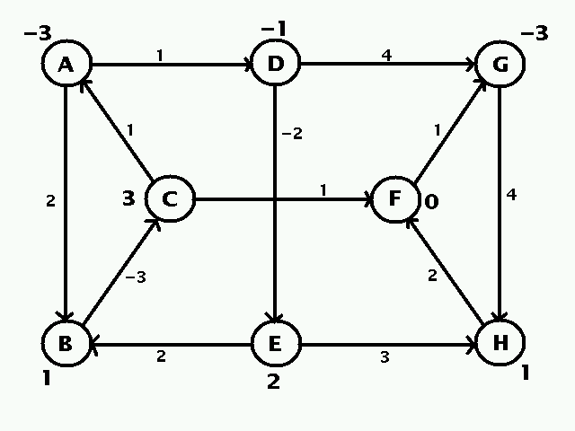
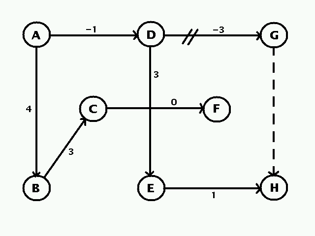
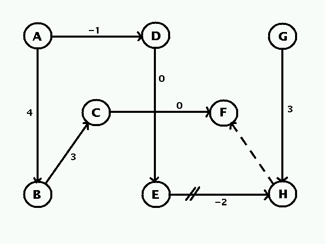
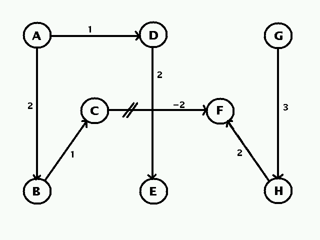

Suppose that winning means recieving a unit of currency from the loser. (Each time the second player wins the first player must cry out, ``You Sunk My Battleship!'')2. Problem #15.3.Consider the primal strategy of choosing three mutually non-overlapping domino positions, and playing them each with probability 1/3. For each choice of square the first player will win 2/3 of the time and lose 1/3 of the time, for an average winnings of 1/3 unit. Therefore player 1 will win at least 1/3 per trial in a primal-optimal strategy.
Now consider the dual strategy of choosing all three squares of the same color in the usual checkerboard coloring, and playing them each with probability 1/3. For each position of a domino the second player will win 1/3 of the time and lose 2/3 of the time, for an average loss of 1/3 unit. Therefore player 1 will win at most 1/3 per trial in a dual-optimal strategy.
Hence the game is not fair -- its value is 1/3 unit. In fact, every basic primal optimal solution has the form described, so every optimal solution is some convex combination of the 3 basic optimal strategies. Likewise, every basic dual optimal solution has the form described, so every optimal solution is some convex combination of the 2 basic optimal strategies.
In fact, the same holds for larger boards. If the number of squares son the board is even (=2t), then the mutually non-overlapping domino positions cover the board perfectly, the squares of one color account for half of all squares, every domino is hit by a unique square, and every square hits a unique domino, so the value of the game is (t-1)/t - 1/t = (t-2)/t.
If the number of squares s=2t+1 is odd, then the dominoes miss exactly one square, and one of the colors includes t squares, while the other colors includes t+1 squares. By choosing the smaller color we arrive at the same value of (t-2)/t.
The problem can be rephrased by replacing the number 1,000 by any integer n >= 3. In any case, supposing the amount won or loss in each case is a single unit, the payoff matrix is anti-symmetric, which agrees with the obvious symmetry, and hence fairness, of the game. In addition, the first column dominates every column from the fourth on, while the first row dominates every row from the fourth on, so the payoff matrix reduces to the 3x3 case. In that case, the game is equivalent to the well-known "rock-scissors-paper" game, and it is clear that each player should play the numbers 1 through three, with equal probability, as their optimal strategies (either by solving the associated linear program or by noticing that each strategy guaranteeing the corresponding player a nonnegative win).3. Problem #19.1.i.
(a) Part i.(b) Text #19.1.ii.
Original Network
Initial Tree 
Optimal Tree 
(c) Text #19.1.iii.
Original Network 
Initial Tree 
Unbounded Network 
Original Network 
Initial Tree 
Second Tree 
Infeasible Network 